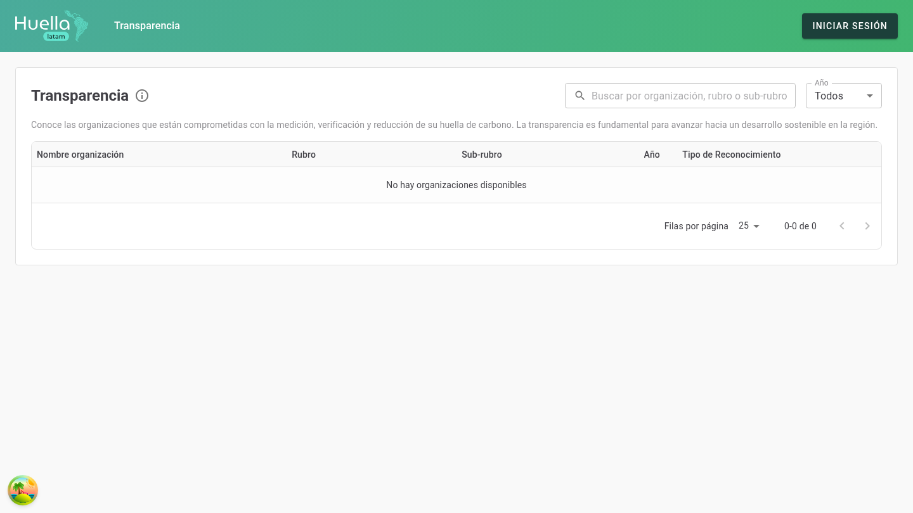

badgeMarca
Identidad aplicada a los manuales de usuario en formato slide 16:9. Los valores derivan del theme de la aplicación (MUI + Tailwind) y del logo.
palettePaleta
Todos los colores del manual son tokens --brand-*. Los
componentes nunca usan hex directos (salvo blanco puro sobre fondos de marca).
text_fieldsTipografía
Familia única: Roboto
('Roboto', 'Helvetica', 'Arial', sans-serif). Escala usada en
los slides del manual.
56px · 700
42px · 600
36px · 700
32px · 700
17px · 400
13px · 400
toggle_onColores de estado
Puntos de estado (.status-dot) y colores semánticos para
ciclos de vida y estados de la aplicación.
widgetsElementos
Componentes que se insertan dentro de las slides de contenido, mostrados a tamaño real.
- bolt Energía: consumo eléctrico y combustibles de fuentes fijas.
- local_shipping Transporte: flota propia y viajes corporativos.
- delete Residuos: disposición y tratamiento de residuos.
| Estado | Etiqueta | Color | Descripción |
|---|---|---|---|
| Borrador | Sin enviar | Gris | Aún no ha sido enviado a revisión. |
| Enviado | Recibido | Verde marca | El inventario fue enviado y está en cola. |
| En revisión | En proceso | Azul | Un verificador está revisando el inventario. |
| Aprobado | Reconocido | Verde | El inventario fue verificado y aprobado. |
| Rechazado | Con observaciones | Rojo | El inventario requiere correcciones. |

1 2 3- 1Título y ayuda: contexto de la vista.
- 2Búsqueda: filtra por organización o rubro.
- 3Tabla de organizaciones: resultados y reconocimiento.
slideshowSlides
Cada tipo de slide del manual, renderizado a escala (1440×810 → 66.7%). El footer con número de página aparece en todas.